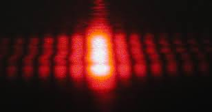
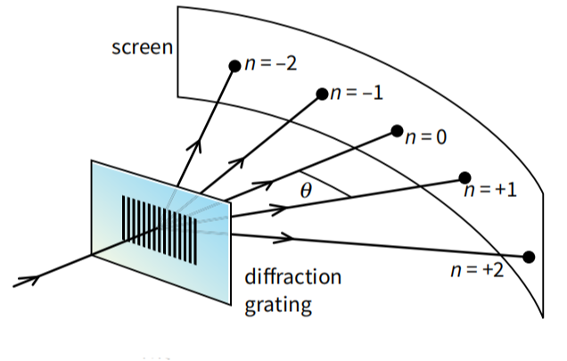

A diffraction grating works by using multiple slits to diffract light and create an interference pattern. In other words, it is a combination of many little diffraction slits.
How a pattern is formed
Diffraction: When light passes through each slit or line on the grating, it diffracts or spreads out.
Interference: These diffracted light waves then overlap and interfere with each other.
The interference can be constructive, where waves add together to make a bright spot, called the maxima.
They can also be destructive, where they cancel each other out, creating a dark area.

Intereference and path difference
The path difference is the difference in the length travelled by light waves from the grating to the screen.
The light waves that form the maxima interfere constructively. They have a phase difference of 0° at n=0, 360° at n=1, 720° at n=2 and so on.
This means that they have a path difference of 0 at n=0, λ at n=1, 2λ at n=2, and so on.
The light waves that form the dark spots between maxima interfere destructively. The first dark spot has a phase difference of 180°, the second 540°, the third 900° and so on.
This means that they have a path difference of \( \frac{1}{2} \lambda \), \( \frac{3}{2} \lambda \) and \( \frac{5}{2} \lambda \).

d sin θ = nλ
The equation for a diffraction grating is d sin θ = nλ, where:
d is the grating spacing or the distance between adjacent lines on the grating.
θ is the angle at which a maxima is observed.
n is the order of the maxima (0 for the central maximum, 1 for the first maxima, 2 for the second, etc.)
λ is the wavelength of the light.
Because the value of sin θ cannot exceed 1 or -1, there is a limit to how many maxima can be produced.
By substituting 1 as sin θ = n, the equation for the maximum order of maxima is \( n_{\text{max}} = \frac{d}{\lambda} \).
Because the grating is symmetrical there will be the same number of maxima on both sides of the central maximum, so the total number of maxima is \( 2n_{\text{max}} + 1 \), with the addition of +1 to include the central maximum at n=0